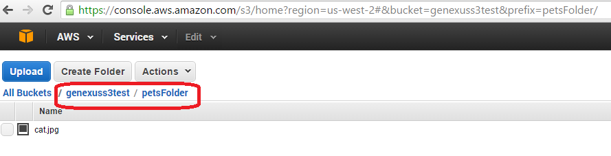

The Storage Provider API enables you to manage the application's global data (any type of files) in an external storage. The external storage can be Amazon, Azure, Google, or IBM Cloud.
The external storage used is the same as the one configured in Storage Provider property.
|
|
|
| Upload(Character &FileFullPath, [Character &FileFullName], [out File &UploadedFile], [out Messages &Messages]):Boolean |
Saves the file to the external storage and returns a reference (File data type) to it. Returns TRUE if the operation was successful and the external file can be returned.
&FileFullPath: to be saved to the external storage. It has to be a full path.
&FileFullName: is the full name that the file will have in the bucket (including folders and extension). Optional parameter.
&UploadedFile: is the file saved to the bucket. Use GetURI() to get the URI of the file in the storage.
&Messages: a collection of Error and Warn Message returned. Optional parameter.
|
| UploadPrivate(Character &FileFullPath, Character &FileFullName, out File &UploadedFile, [out Messages &Messages ]):Boolean |
Saves the file to the external storage and returns a reference (File data type) to it. Returns TRUE if the operation was successful and the external file can be returned.
The uploaded file is private. So, in this case, the file is signed and uploaded to the bucket. The certificate used to sign the file is generated by the provider.
&FileFullPath: to be saved to the external storage. It has to be a full path.
&FileFullName: is the full name that the file will have in the bucket (including folders and extension). Optional parameter.
&UploadedFile: is the file saved to the bucket.
&Messages: a collection of Error and Warn Message returned. Optional parameter.
|
| Get(Character &FileFullName, out File &ExternalFile, [out Messages &Messages ]):Boolean |
Returns a reference (File data type) of the file in the external storage. Returns TRUE if the operation was successful and the external file can be returned.
&FileFullName: is the full name that the file has in the bucket (including folders and extension).
&ExternalFile: is the file retrieved from the bucket.
&Messages: a collection of Error and Warn Message returned.
|
| GetPrivate(Character &FileFullName, out File &ExternalFile, Numeric &ExpirationMinutes, [out Messages &Messages ]):Boolean |
Returns a reference (File data type) of the file in the external storage. Returns TRUE if the operation was successful and the external file can be returned.
The URL obtained is valid only for a period of time, determined by the
&ExpirationMinutes parameter.
&FileFullName: is the full name that the file has in the bucket (including folders and extension).
&ExternalFile: is the file retrieved from the bucket.
&ExpirationMinutes: Space of time during which the &ExternalFile points to a valid URL.
&Messages: a collection of Error and Warn Message returned.
Note: The URL returned by &ExternalFile.GetURI() is one that expires after expirationMinutes.
|
| Download(Character &FileFullName, File &LocalFile, [out Messages &Messages ]):Boolean |
Downloads the external file to the application server and saves it locally. Returns TRUE if the operation was successful.
&FileFullName: is the full name that the file has in the bucket (including folders and extension).
&LocaFile: File where the external file is going to be saved after being downloaded.
&Messages: a collection of Error and Warn Message returned.
|
| DownloadPrivate(Character &FileFullName, File &LocalFile, [out Messages &Messages ]):Boolean |
(Only applies to Azure Storage Provider)
Downloads the private external file to the application server and saves it locally. Returns TRUE if the operation was successful.
&FileFullName: is the full name that the file has in the bucket (including folders and extension).
&LocaFile: File where the external file is going to be saved after being downloaded.
&Messages: a collection of Error and Warn Message returned.
|
| GetDirectory(Character &DirectoryFullName, out Directory &ExternalDirectory,[out Messages &Messages]):Boolean |
Returns a Directory in the external storage (the cloud). In Amazon, the format is <bucketname>: Directory
Ex: genexuss3test:\petsFolder\
&DirectoryFullName: Is the Directory name in the external storage.
|
Note: The &Messages object is a collection of Messages.Message with the following format:
- Id: The error code returned by the Storage Provider (Amazon S3, Google, etc)
- Type: (0 = Warning,1 = Error)
- Description: The error description returned by the Storage Provider.
When there is no error, the &Messages collection is empty.
Consider a scenario where you need to upload files to the external storage manually. Note that the file to be uploaded to the external storage has been uploaded previously to the application server.
First, we define a &Storage variable, of StorageProvider data type.
The file to be saved to the external storage is originally located on the server's file system, so we use the File data type to get its absolute path.
The Upload method of the Storage Provider API allows you to give a full name to the file being uploaded, including folders and extension.
&Storage = new() //This line of code creates a new instance of the external storage configured in the KB
&File.Source ="catToUpload.jpg" //&File is of File data type.
&FileFullPath = &File.GetAbsoluteName()
&StorageObjectFullName = "petsFolder/cat.jpg"
if ( &Storage.Upload(&FileFullPath, &StorageObjectFullName, &UploadedFile, &Messages) )
&URL = &UploadedFile.GetURI() //&URL of the uploaded file
else
for &Message in &Messages
msg(&Message.Description, status)
endfor
endif
In this example, given that the bucket name is genexuss3test, the folder petsFolder is created under that bucket and contains the file uploaded.

Here we get the URI of the file located in the external storage. &ExternalFile is of File data type.
&StorageObjectFullName = "petsFolder/cat.jpg"
if ( &Storage.Get(&StorageObjectFullName, &ExternalFile, &Messages) )
msg(format("The external URI of the image is : %1", &ExternalFile.GetURI()), status)
else
for &Message in &Messages
msg(&Message.Description, status)
endfor
endif
It returns: https://genexuss3test.s3.amazonaws.com/petsFolder/cat.jpg
In this example, we download the external file to the server's file system. &LocalFile is of File Data type.
&StorageObjectFullName = "petsFolder/cat.jpg"
&LocalFile.Source = "catDownloadFromStorage.jpg"
if ( &Storage.Download(&StorageObjectFullName, &LocalFile, &Messages) )
msg(format("Image downloaded to : %1", &LocalFile.GetAbsoluteName()), status)
else
for &Message in &Messages
msg(&Message.Description, status)
endfor
endif
Here we remove all the files from the external storage folder. &ExternalDirectory is of Directory data type.
Note that the file is treated as an external file here.
&DirectoryFullName = "petsFolder"
if ( &Storage.GetDirectory(&DirectoryFullName, &ExternalDirectory, &Messages) )
for &ExternalFile in &ExternalDirectory.GetFiles()
&ExternalFile.Delete()
endfor
else
msg(format("The directory %1 couldn't be obtained", &DirectoryFullName))
for &Message in &Messages
msg(&Message.Description, status)
endfor
endif
&Storage = new()
&File.Source ="catToUpload.jpg"
&FileFullPath = &File.GetAbsoluteName()
&StorageObjectFullName = "Private/cat1.jpg"
if (&Storage.UploadPrivate(&FileFullPath, &StorageObjectFullName) )
msg("File has been successfuly uploaded", status)
else
for &Message in &Messages
msg(&Message.Description, status)
endfor
endif
&Storage.GetPrivate(&StorageObjectFullName,&UploadedFile,11)
msg(&UploadedFile.GetURI(), status) //URL is valid during 11 minutes
See Configuration.ExternalStorage External Object.
The Storage Provider API is available for Java and .NET Generators and all Storage providers supported by the Storage Provider property.
Exception: UploadPrivate and GetPrivate are available only for .NET Generator and Amazon S3 since GeneXus 15 Upgrade 3. They are available for .NET Generator and Java Generators for Amazon S3 and Microsoft Azure since GeneXus 15 Upgrade 7. These methods will be available for the rest of platforms in the upcoming upgrades.
|